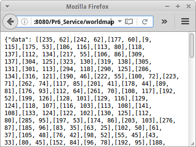
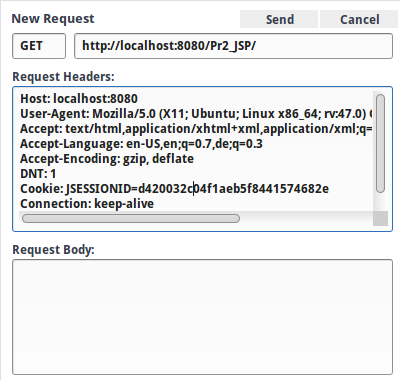

Services
Mit der Verbreitung von Apps und mobilen Endgeräten hat auch der Bedarf an Web-Services explosionsartig zugenommen. In diesem Kapitel werden wir sehen wie wir Services zur Verfügung stellen, und wie diese im Detail funktionieren. Nächstes Semester können wir dann basierend auf diesen Services mobilen Anwendungen realisieren.
.
SimpleServlet
Wir haben Servlets bereits im zweite Kapitel kennengelernt: damals haben wir gesehen, dass aus jeder JSP Seite erst einmal ein Servlet generiert wird, das dann kompiliert und später ausgeführt wird. Was sind Servlets? Servlets sind einfach Java Klassen die die Klasse HttpServlet als Elternklasse haben:
public class SimpleServlet extends HttpServlet {
@Override
protected void doGet(HttpServletRequest request, HttpServletResponse response)
throws ServletException, IOException {
PrintWriter out = response.getWriter();
out.println("Hello from SimpleServlets doGet() method.");
}
@Override
protected void doPost(HttpServletRequest request, HttpServletResponse response)
throws ServletException, IOException {
PrintWriter out = response.getWriter();
out.println("Hello from SimpleServlets doPost() method.");
}
@Override
public String getServletInfo() {
return "Demonstration of servlets.";
}
}
Es gibt eine doGet() und eine doPost() Methode, die wir überschreiben können, wie im obigen Beispiel. Die erstere wird aufgerufen wenn wir einen HTTP GET Request erhalten, die letztere wenn wir einen POST Request erhalten. Servlets erlauben es uns also zwischen den beiden zu unterscheiden. Um den Unterschied zu sehen, betrachten wir eine kleine JSP Seite:
<html> <body> <h1>SimpleServlet</h1> <p>Access servlet via <a href="simpleservlet">GET</a> request.</p> <form action="simpleservlet" method="POST"> <p>Access servlet via <input type="submit" value="POST"/> request.</p> </form> </body> </html>
Über den Link rufen wir die doGet() Methode auf, über das Formular die doPost() Methode.
Interessant ist auch wie Servlets aufgerufen werden. Die URL lautet einfach
http://localhost:8080/Pr6_Service/simpleservlet
wir sagen einfach "simpleservlet" also ohne eine Endung wie ".jsp" oder ".servlet" oder so. Der Grund dafür ist die web.xml Datei. Die Datei befindet sich im /WEB-INF Verzeichnis bei unseren JSP Seiten, und war schon immer da, nur bisher haben wir sie ignoriert, bzw. nicht gebraucht. Allerdings für jedes Servlet das wir schreiben, müssen wir einen Eintrag in die web.xml Datei machen:
<web-app version="3.1" ...> <servlet> <servlet-name>SimpleServlet</servlet-name> <servlet-class>de.variationenzumthema.internet.simpleservlet.SimpleServlet</servlet-class> </servlet> <servlet-mapping> <servlet-name>SimpleServlet</servlet-name> <url-pattern>/simpleservlet</url-pattern> </servlet-mapping> <session-config> <session-timeout> 30 </session-timeout> </session-config> <welcome-file-list> <welcome-file>index.jsp</welcome-file> </welcome-file-list> </web-app>
Wir sehen also, dass der URL-Pattern "simpleservlet" auf das Servlet mit Namen SimpleServlet gemapped wird. Dessen Deklaration wiederum in der Klasse de.variationenzumthema.internet.simpleservlet.SimpleServlet zu finden ist.
Zwei andere Dinge die wir hier noch sehen: zum Einen wird hier anscheinend die Session-Timeout Zeit festgelegt, in diesem Fall 30 Minuten. Und die Begrüssungsdatei, also das welcome-file, ist "index.jsp". Das bedeutet, immer wenn ein Nutzer nur das Verzeichnis und keine genaue Dateiangabe für die URL macht, wird diese Datei angezeigt.
.
StocksServlet
Natürlich können Servlets auch auf Datenbanken zugreifen. Als Beispiel nehmen wir das Aktienbeispiel aus dem letzten Kapitel. POJO, Dao und Hibernate Konfiguration sind vollkommen unverändert. Nur anstelle einer JSP Datei, verwenden wir jetzt ein Servlet für die Ausgabe:
public class StocksServlet extends HttpServlet {
@Override
public void init() throws ServletException {
super.init();
String path = getServletContext().getRealPath("/") + "SP500_HistoricalStockDataMonthly.csv";
ServletContext application = getServletContext();
// init database with data from file:
StockDao dao = new StockDao();
List<String> dates = dao.initStockPriceTable(path);
application.setAttribute("Stocks.dao", dao);
application.setAttribute("Stocks.dates", dates);
}
@Override
protected void doGet(HttpServletRequest request, HttpServletResponse response)
throws ServletException, IOException {
// query database for symbol
String symbol = request.getParameter("symbol");
StockDao dao = (StockDao) getServletContext().getAttribute("Stocks.dao");
List<String> dates = (List<String>) getServletContext().getAttribute("Stocks.dates");
StockSymbol sp = dao.getStockPrice(symbol);
PrintWriter out = response.getWriter();
if (sp != null) {
out.println(sp.getJSON());
} else {
//out.println("symbol not found");
//response.setStatus(HttpServletResponse.SC_NOT_FOUND);
response.sendError(HttpServletResponse.SC_NOT_FOUND,"stock symbol not found");
}
}
}
Wir sehen, dass Servlets auch eine init() Methode haben, die vollkommen analog zur jspInit() Methode funktioniert. Auch auf das application Objekt können wir dort zugreifen. In der doGet() Methode ist dann die eigentlich Logik: auch wieder mit request.getParameter() greifen wir auf die Parameter zu. Einzig, das out Objekt ist jetzt nicht mehr vordefiniert, das können wir aber auch selbst machen, wie wir oben sehen.
.
JSON
Ein kleiner Unterschied zur JSP Version existiert: die Klasse StockSymbol hat zusätzlich eine Methode namens getJSON():
public class StockSymbol {
...
public String getJSON() {
return "{\"symbol\": \"" + symbol + "\", \"prices\": " + prices + '}';
}
}
JSON steht für "JavaScript Object Notation" [1] und ist ein Standard der sehr häufig im Zusammenhang mit Webservices verwendet wird. Es ist ein sehr einfaches Format das es erlaubt Daten, und vor allem Objekte, zwischen zwei Parteien auszutauschen. Früher war dafür hauptsächlich XML vorgesehen, heute wird aber fast ausschliesslich JSON verwendet.
In JSON werden Arrays einfach mit eckigen Klammern dargestellt, also aus dem Java
String[] months = {"Jan","Feb",...,"Dec"};
wird einfach das folgende JSON
["Jan","Feb",...,"Dec"]
Noch interessanter aber ist, dass wir auch Objekte mit JSON darstellen können. Wenn wir aus der Java Klasse Dog:
public class Dog {
private String name;
private int age;
public Dog(String n, int a) {
name = n;
age = a;
}
}
ein Objekt erzeugen, z.B., new Dog("Lassie", 42), dann wird daraus folgendes JSON Objekt:
{name: "Lassie", age: 42}
Richtig cool ist, wie JavaScript mit JSON Objekten umgehen kann, und das ist eigentlich der Hauptgrund für den Siegeszug von JSON.
.
Histogram
Wir können natürlich Servlets verwenden um Webservices zu schreiben. Das geht ohne Problem, denn neben den doGet() und doPost() Methoden gibt es auch noch eine doPut() und eine doDelete() Methode. Allerdings geht es etwas einfacher mit dem Jersey Framework [2], das inziwschen Teil von Standard Java ist. Damit Jersey funktioniert muss man einen Eintrag in die web.xml Datei hinzufügen:
<web-app version="3.1" ...>
...
<servlet>
<servlet-name>rest</servlet-name>
<servlet-class>org.glassfish.jersey.servlet.ServletContainer</servlet-class>
<init-param>
<param-name>jersey.config.server.provider.packages</param-name>
<param-value>de.variationenzumthema.internet.service</param-value>
</init-param>
</servlet>
<servlet-mapping>
<servlet-name>rest</servlet-name>
<url-pattern>/service/*</url-pattern>
</servlet-mapping>
</web-app>
Wie wir sehen basiert Jersey auf Servlets. Und wir sehen, dass alles was mit der URL /service/ beginnt an Jersey weitergeleitet wird.
Betrachten wir unser Histogram Beispiel aus dem ersten Semester. Zunächst geht es wieder darum JSON zu erzeugen. Beginnen wir mit einer Klasse HistogramData, die die Daten für ein Histogramm beinhaltet.
@XmlRootElement
public class HistogramData {
private Integer[] data = {5, 11, 15, 20, 17, 20};
public Integer[] getData() {
return data;
}
public void setData(Integer[] data) {
this.data = data;
}
}
Es handelt sich um eine ganz einfache Klasse, aber es könnte natürlich auch ein POJO sein, dessen Daten aus einer Datenbank kommen. Die Annotation @XmlRootElement ist nur nötig wenn wir XML erzeugen wollen. Solange wir nur JSON erzeugen wollen können wir sie auch weglassen.
Um daraus jetzt einen Webservice zu machen, verwenden wir wie bei Hibernate Annotationen:
@Path("/histogram") public class HistogramResource { public HistogramResource() { super(); } @GET @Produces(MediaType.APPLICATION_JSON) public HistogramData getHistogram() { return new HistogramData(); } }
Die erste Annotation @Path("/histogram") besagt, dass der Service unter der URL
http://localhost:8080/Ch6_Service/service/histogram
aufgerufen werden kann. Die @GET Annotation besagt, dass diese Methode aufgerufen werden soll wenn ein HTTP GET Request anfragt. Und schließlich die @Produces Annotation ist der Hauptgrund warum wir Jersey verwenden: denn die sorgt dafür, dass aus dem Objekt "new HistogramData()" automatisch JSON generiert wird. Falls wir möchten, dass XML generiert wird, müssen wir lediglich MediaType.APPLICATION_JSON durch MediaType.APPLICATION_XML ersetzen (und noch die Annotation @XmlRootElement vor die Klasse HistogramData schreiben).
Die histogram.jsp Datei zeigt, wie man dann mittels JavaScript und diesen JSON Daten einen sehr hübschen Barchart erzeugen kann. Der JavaScript Code ist praktisch unverändert von Scott Murray's "Making a bar chart" Tutorial übernommen. [3]
.
 IPBlocking
IPBlocking
Kommen wir zum nächsten wichtigen Konzept in diesem Kapitel, den Filtern. Nehmen wir an wir möchten den Zugriff auf unseren Server einschränken. Z.B. haben wir festgestellt, dass von den IP Adressen die mit "127.0." beginnen ein Denial-of-Service Attacke auf unseren Server gefahren wurde, und wir daher diese Adressen nicht auf unseren Server lassen wollen. Oder umgekehrt, wir möchten nur Zugriff aus dem lokalen Netzwerk erlauben. Beides kann man sehr einfach mit Filtern erledigen.
Dazu muss man zunächst in der web.xml Datei den Filter anmelden:
<web-app version="3.1" ...>
...
<filter>
<filter-name>IPBlockingFilter</filter-name>
<filter-class>de.variationenzumthema.internet.ipblockingfilter.IPBlockingFilter</filter-class>
</filter>
<filter-mapping>
<filter-name>IPBlockingFilter</filter-name>
<url-pattern>/ipblocking/*</url-pattern>
</filter-mapping>
</web-app>
Jetzt wird also der gesammte Verkehr der an die URL /ipblocking/ gerichtet ist, erst einmal an den IPBlockingFilter weitergeleitet. Dieser entscheidet dann was mit den Anfragen passieren soll:
public class IPBlockingFilter implements Filter {
private FilterConfig config;
@Override
public void init(FilterConfig filterConfig) throws ServletException {
this.config = filterConfig;
}
@Override
public void doFilter(ServletRequest request, ServletResponse response, FilterChain chain)
throws IOException, ServletException {
String ip = request.getRemoteAddr();
if (!ip.startsWith("127.0.")) {
chain.doFilter(request, response);
} else {
if (response instanceof HttpServletResponse) {
((HttpServletResponse) response).sendError(
HttpServletResponse.SC_FORBIDDEN,
"Your IP has been blocked!");
}
}
}
@Override
public void destroy() {
// does nothing
}
}
Die ganze Magie passiert in der doFilter() Methode, hier entscheiden wir ob wir den weiteren Zugriff zulassen wollen, das geht dann mit chain.doFilter(), oder ob dem Browser einfach ein freche Antwort schicken, dass der Zugriff verboten ist. Natürlich sehen wir sofort, dass Filter super-praktisch für unser Sicherheitsmanagement sind. Dazu später mehr.
.
Review
In diesem Kapitel haben drei wichtige Konzepte kennengelernt:
- Servlets
- Filter und
- RESTful Webservices und JSON.
Wobei wir die RESTful Webservices nur angedeutet haben. Gleich kommt aber mehr dazu.
.
Projekte
Die Projekte in diesem Kapitel vertiefen Webservices an zwei Beispielen, und zeigen wie Filter für die Sicherung unserer Webseiten verwendet werden können.
.
WorldMap
Natürlich glaubt mir immer keiner, dass JSON wirklich cool ist, deswegen machen wir gleich ein Beispiel. Auch wieder in unserem ersten Semester haben wir ja eine WorldMap gemalt. Damals mit der ACM Graphics Library. Für Webgeschichten stellt sich heraus, dass die D3JS JavaScript Library fast genauso cool ist. Wir haben sie ja schon zweimal weiter oben in Aktion gesehen.
Zunächst schreiben wir ein Servlet, dass unsere Geo-Daten für Städte in einem JSON Format ausgibt. Der Code ist fast identische zu dem aus dem ersten Semester.
public class WorldMapServlet extends HttpServlet {
private final int WIDTH = 350;
private final int HEIGHT = 200;
private String json = "";
@Override
public void init() throws ServletException {
super.init();
String path = getServletContext().getRealPath("/") + "Cities.txt";
json = loadAndDisplayData(path);
}
private String loadAndDisplayData(String fileName) {
String json = "{\"data\": [";
//json += "[ [5, 20], [480, 90], [250, 50], [100, 33], [220, 88]]";
try {
BufferedReader br = new BufferedReader(new FileReader(fileName));
while (true) {
String line = br.readLine();
if (line == null) {
break;
}
if (!line.startsWith("#")) {
// Germany, Berlin, 52", 32', N, 13", 25', E
String[] data = line.split(",");
String country = data[0].trim();
String name = data[1].trim();
String lat1 = data[2].trim();
String lat2 = data[3].trim();
String lat3 = data[4].trim();
int lat = Integer.parseInt(lat1);
if (lat3.endsWith("S")) {
lat = -lat;
}
String lon1 = data[5].trim();
String lon2 = data[6].trim();
String lon3 = data[7].trim();
int lon = Integer.parseInt(lon1);
if (lon3.endsWith("E")) {
lon = -lon;
}
int x = (int)((0.5 - lon / 360.0) * WIDTH);
int y = (int)((0.5 - lat / 180.0) * HEIGHT);
json += "["+x+", "+y+"],";
}
}
br.close();
} catch (Exception e) {
e.printStackTrace();
}
json = json.substring(0,json.length()-1);
json += "]}";
return json;
}
/**
* Simply return the JSON object: {"data": [[235, 62],[242, 62],...]}
*/
@Override
protected void doGet(HttpServletRequest request, HttpServletResponse response)
throws ServletException, IOException {
PrintWriter out = response.getWriter();
out.println(json);
}
}
Wir laden die Datei "Cities.txt" und speichern die Werte als JSON in einer Instanzvariable. Das machen wir in der init() Methode. Die doGet() Methode gibt dann einfach die Instanzvariable zurück. Was wir hier auch sehen, dass Servlet Programmierung eigentlich viel ähnlicher zu unserer normalen Art und Weise zu programmieren, als es etwas JSP Programmierung ist.
Wenn wir jetzt im Browser folgende URL aufrufen
http://localhost:8080/Pr6_Service/worldmap
erhalten wir die Geo-Daten im JSON Format.
Die Datei worldMap.jsp enthält das notwendige D3JS JavaScript, dass die Daten als Scatterplot anzeigt. Der JavaScript Code ist praktisch unverändert von Scott Murray's "Making a scatterplot" Tutorial. [4]
.
HighScore Webservice
Wir wollen aus unserer HighScore Anwendung einen RESTful Webservice machen. Dazu fassen wir kurz die Anforderungen zusammen, die wir von unserem Webservice erwarten:
- die HighScores aller Spieler sortiert nach höchsten Score auflisten
- einen neuen HighScore für einen Spieler anlegen
- den HighScore eines Spielers ausgeben
- den HighScore eines Spielers verändern
- den HighScore eines Spielers löschen
Wenn wir einen RESTful Webservice kreiiren, durchlaufen wir immer die gleichen Schritte. Wir identifizieren nacheinander
- die Resourcen, also URLs,
- die HTTP Methoden, also GET, PUT, POST und/oder DELETE,
- die Repräsentationen, z.B. JSON oder XML,
- und die HTTP Status Codes die zurückgegeben werden.
Gehen wir die Punkte im Einzelnen durch.
.
1. Resourcen
Resourcen sind immer URLs. In der Regel werden aus den POJOs Resourcen. Da es in unserem Beispiel nur das HighScore POJO gibt, gibt es auch nur eine Resource:
/service/highscores/
In der Regel wählt man die Pluralform des POJOs.
.
2. Methoden
Was die Methoden angeht, da ist die Auswahl beschränkt: es gibt GET, PUT, POST und DELETE. Die entsprechen den CRUD Operationen die es in einer Datenbank gibt, also Create, Read, Update und Delete, und genügen in der Regel.
GET wird zum Lesen einer Resource verwendet und ist unschädlich, da sie nichts verändert. PUT wird verwendet um eine exitierende Resource zu verändern. Manchmal wird PUT auch verwendet um eine neue Resource anzulegen, aber normalerweise wird dafür POST verwendet. Und DELETE macht genau das, es löscht eine exitierende Resource. PUT, POST und DELETE sind gefährlich, da sie Änderungen vornehmen.
Meist nimmt man seine Anforderungen und fasst diese in eine Tabelle mit den Resourcen und den Methoden zusammen. Für unser HighScore Beispiel sieht das dann so aus, und gibt uns eine schöne Übersicht über den Webservice:
| URL | GET | PUT | POST | DELETE |
| highscores/ | HighScores aller Spieler listen | (HighScores aller Spieler ersetzen) | HighScore für einen Spieler neu anlegen | (HighScores aller Spieler löschen) |
| highscores/ralph | HighScore eines Spielers ausgeben | HighScore für einen Spieler verändern | HighScore eines Spielers löschen |
.
3. Repräsentationen
Unter Repräsentation versteht man das Datenformat das ein Webservice versteht. In der Regel sollte es immer ein existierender Webstandard sein, muss es aber nicht. Häufig verwendete Formate sind z.B. Text, JSON, HTML, XML, aber auch GIF und andere MIME Formate sind möglich.
Nehmen wir an, wir möchten den Highscore des Nutzers "ralph". Wir würden dann einen GET Request an die Resouce "/service/highscores/ralph" schicken, und als Antwort das folgende JSON erhalten:
{"score":42,"userId":"ralph"}
Umgekehrt wenn wir einen neuen Highscore für den neuen Nutzer "fish" anlegen wollen, würden wir einen POST Request an die Resouce "/service/highscores/" schicken, und im Body des POST Requests wäre folgendes JSON erhalten:
{"userId":"fish","score":222}
Auch hier kann man alle verwendeten Repräsentationen in einer schönen Tabelle zusammenfassen:
| URL | GET | PUT | POST | DELETE |
| highscores/ | JSON | |||
| highscores/ralph | JSON | JSON |
.
4. Status Codes
Bei den Status Codes geht es darum dem Client mitzuteilen ob alles funktioniert hat, oder ob etwas schief gelaufen ist. Hierzu verwendet REST die genz normalen HTTP Status Codes [5]. Wenn alles in Ordnung ist, dann werden die 200er verwendet, z.B.
- 200 OK
- 201 Created
- 204 No Content (also wie 200, aber im HTTP Body ist nix)
Wenn etwas schief gelaufen ist, gibt es die 400er:
- 400 Bad Request
- 404 Not Found
- 405 Method Not Allowed
- 409 Conflict (resource already exists)
Wenn etwas total schief gelaufen ist, also am Server, z.B. Datenbank kaputt oder Meteoriteneinschlag, dann gibt es die 500er:
- 500 Internal Server Error
Am besten schauen wir uns mal an wie wir die Status Codes in unserem Beispiel verwenden würden:
| URL | GET | PUT | POST | DELETE |
| highscores/ |
200 OK 404 Not Found |
405 Method Not Allowed |
201 Created 409 Conflict (resource already exists) |
405 Method Not Allowed |
| highscores/ralph |
200 OK 404 Not Found |
204 No Content 404 Not Found |
405 Method Not Allowed |
204 No Content 404 Not Found |
.
Jersey
Nachdem wir ja die Datenbank schon im letzten Kapitel aufgesetzt haben, ist die Implementierung des Webservices eigentlich ganz einfach, wenn man das Jersey Framework verwendet.
@Path("/highscores")
public class HighScoresResource {
@Context
UriInfo uriInfo;
@Context
Request request;
public HighScoresResource() {
super();
}
@GET
@Produces({MediaType.APPLICATION_JSON})
public List<HighScore> getHighScores() {
return HighScoreDao.getInstance().findAll();
}
@GET
@Path("/{param}")
@Produces(MediaType.APPLICATION_JSON)
public Response getHighScore(@PathParam("param") String userId) {
HighScore hs = HighScoreDao.getInstance().findById(userId);
if (hs != null) {
return Response.status(200).entity(hs).build();
} else {
return Response.status(404).entity("Unknown userId.").build();
}
}
@PUT
@Path("/{param}")
@Consumes(MediaType.APPLICATION_JSON)
public Response putHighScore(@PathParam("param") String userId, HighScore hs) {
if ((userId != null) && (hs != null)) {
if (userId.equals(hs.getUserId())) {
if (HighScoreDao.getInstance().findById(userId) != null) {
HighScoreDao.getInstance().merge(hs);
String result = "HighScore updated: " + hs.getUserId();
return Response.status(204).entity(result).build();
}
}
}
return Response.status(404).entity("Not Found").build();
}
@POST
@Consumes(MediaType.APPLICATION_JSON)
public Response postHighScore(HighScore hs) {
if (HighScoreDao.getInstance().findById(hs.getUserId()) == null) {
HighScoreDao.getInstance().save(hs);
String result = "HighScore created: " + hs.getUserId();
return Response.status(201).entity(result).build();
}
return Response.status(409).entity("Conflict (resource already exists)").build();
}
@DELETE
@Path("/{param}")
public Response deleteHighScore(@PathParam("param") String userId) {
if (HighScoreDao.getInstance().findById(userId) != null) {
HighScore hs = HighScoreDao.getInstance().findById(userId);
HighScoreDao.getInstance().delete(hs);
String result = "HighScore deleted: " + hs.getUserId();
return Response.status(204).entity(result).build();
}
return Response.status(404).entity("Not Found").build();
}
}
.
Testen
Das Testen des Webservice gestaltet sich etwas schwieriger, aber kann entweder mit der Firefox Webconsole erfolgen, wie z.B. rechts zu sehen, oder mittels JavaScript.
Das JavaScript ist in der Datei webservice.js, die im Header der highScore.jsp Datei geladen wird. Wenn man etwas JavaScript versteht, ist sie gar nicht so schwer. Wir zeigen nur die beiden Teile für einen GET Request. In der highScore.jsp Datei steht dort:
... <a href="#" onclick="sendGetRequest('service/highscores/');return false;"> GET</a> highscores/ <input type="text" size="5" id="urnGET" value="ralph"><br/><br/> <span id="responseGET"> </span><br/> <span id="statusCodeGET"> </span> ...
d.h. bei einem Klick auf den Link, wir die JavaScrpt Methode sendGetRequest() aufgerufen. Die ist wiederum in der Datei webservice.js definiert:
function sendGetRequest(url) {
var urn = document.getElementById("urnGET").value;
url = url + urn;
var xmlhttp = new XMLHttpRequest();
xmlhttp.onreadystatechange = function() {
if (xmlhttp.readyState == XMLHttpRequest.DONE) {
document.getElementById("responseGET").innerHTML = xmlhttp.responseText;
document.getElementById("statusCodeGET").innerHTML = xmlhttp.status;
}
}
xmlhttp.open("GET", url, true);
xmlhttp.send();
}
Das Ganze ist eigentlich nur zum Testen gedacht, ansonsten ist es eher nutzlos.
.
 Secure
Secure
Bei der Secure Anwendung verwenden wir einen Filter, um den Zugriff auf das /secure/ Verzeichnis unserer Webanwendung zu schützen. Nur Anwender die sich eingeloggt haben, dürfen auf Mona_Lisa.jpg oder secret.jsp zugreifen. Um das einloggen etwas einfacher zu machen, genügt es auf den Link klicken, dann wird secureLogic.jsp aufgerufen,
<%
session.setAttribute("User", "blahblah");
response.sendRedirect("secure.jsp");
return;
%>
die nichts anderes macht als uns "einzuloggen", als das Attribut "User" im session Objekt zu setzen.
 Der Filter ist wieder überraschend einfach:
Der Filter ist wieder überraschend einfach:
public class SecurityFilter implements Filter {
private FilterConfig config;
@Override
public void init(FilterConfig filterConfig) throws ServletException {
this.config = filterConfig;
}
@Override
public void doFilter(ServletRequest request, ServletResponse response, FilterChain chain)
throws IOException, ServletException {
HttpServletRequest httpReq = (HttpServletRequest) request;
HttpServletResponse httpResp = (HttpServletResponse) response;
HttpSession session = httpReq.getSession();
String user = (String)session.getAttribute("User");
if ( user != null ) {
chain.doFilter(request, response);
} else {
httpResp.sendRedirect("../index.jsp");
return;
}
}
@Override
public void destroy() {
// does nothing
}
}
Wenn wir den SecurityFilter mit unserer Login Anwendung aus dem letzten Kapitel verbinden, dann sehen wir, dass es jetzt auf einmal viel einfacher geworden ist eine Anwendung sicher zu machen, denn es ist nicht mehr nötig jede Seite individuell mit den Zeilen
<%
User usr = (User)session.getAttribute("Login.User");
if ( usr == null ) {
response.sendRedirect("login.jsp");
return;
}
%>
...
zu beginnen, sondern es genügt alle zu schützenden Seiten und Dateien in das Verzeichnis /secure/ zu stecken.
.
Fragen
-
Vergleichen Sie die Technologien Java Servlets und Java Server Pages (JSP). Geben Sie je ein Beispiel wofür sich die eine besser eignet als die andere.
-
Bei der Gestaltung eines RESTful Web-Services folgt man in der Regel mehreren Schritten: Zunächst ermittelt man, welche Ressourcen benötigt werden (URI), dann muss man feststellen, welche der HTTP Methoden umgesetzt werden sollen, und schließlich muss man angeben, welche Representation für jede Ressource und Methods verwendet wird (z.B. JSON). Anhand einer einfachen Version von Yahoo Finance definieren Sie bitte die Ressourcen, Methoden und Repräsentation die nötig sind, um die folgenden Anforderungen abzubilden. Ein authenifizierter Benutzer sollte
a) alle Aktien die man kaufen oder verkaufen kann auflisten
b) das Depot des Benutzers auflisten, also eine Liste aller Aktien die der Benutzer besitzt
c) den momentanen Preis einer Aktie abfragen können
d) eine bestimmte Anzahl einer Aktie kaufen können
e) eine bestimmte Anzahl einer Aktie verkaufen können
-
Bei der Gestaltung eines RESTful Web-Service, folgt man in der Regel mehreren Schritten: Zunächst ermittelt man, welche Ressourcen benötigt werden (URI), dann muss man feststellen, welche der HTTP Methoden umgesetzt werden sollen, und schließlich muss man angeben, welche Representation für jede Ressource und Methods verwendet wird (z.B.JSON). Anhand einer einfachern Version von Facebook definieren Sie bitte die Ressourcen, Methoden und Repräsentation die nötig sind, um die folgenden Anforderungen abzubilden:
a) es können neue User angelegt und gelöscht werden
b) jeder User hat einen Status, der gelesen und geändert werden kann
c) jeder User hat eine List von Freunden, zu der neue Freunde hinzugefügt werden können und Freunde entfernt werden können.
-
Wofür ist die Firefox Web Console gut?
- Das HTTP Protokoll verwendet Status-Codes. Bitte erläutern Sie die fünf verschiedene Arten von Status-Codes (wie z.B. einen 404) und geben Sie für jeden je ein Beispiel, dh, in welchem Zusammenhang ein solcher Code auftreten könnte.
.
Referenzen
Anbei sind die Referenzen zu diesem Kapitel. Eine sehr schöne Zusammenfassung von RESTful Webservices ist Referenz [6].
[1] Introducing JSON, www.json.org
[2] Jersey, RESTful Web Services in Java, https://jersey.java.net/
[3] Scott Murray, Making a bar chart, http://alignedleft.com/tutorials/d3/making-a-bar-chart
[4] Scott Murray, D3 Tutorials, alignedleft.com/tutorials/d3/
[5] List of HTTP status codes, https://en.wikipedia.org/wiki/List_of_HTTP_status_codes
[6] Roger L. Costello, Building Web Services the REST Way, www.xfront.com/REST-Web-Services.html
.